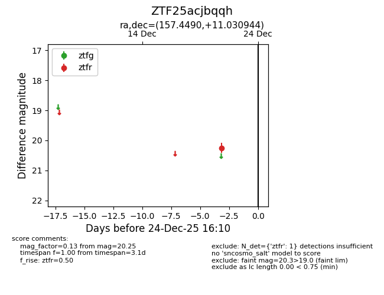
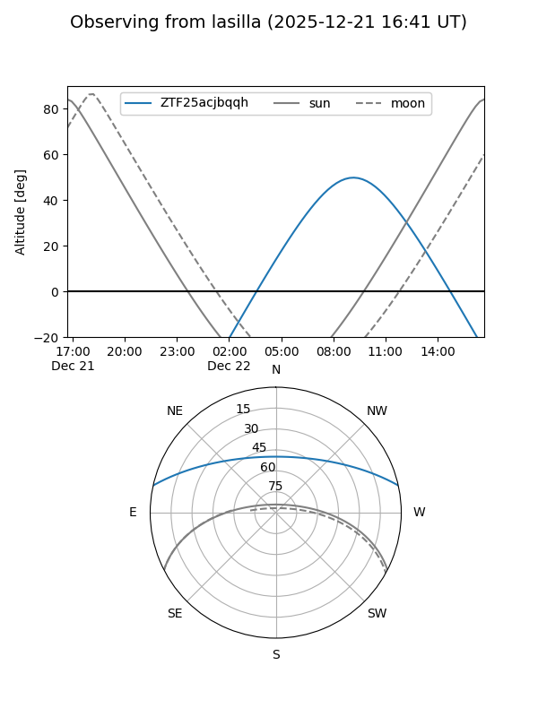
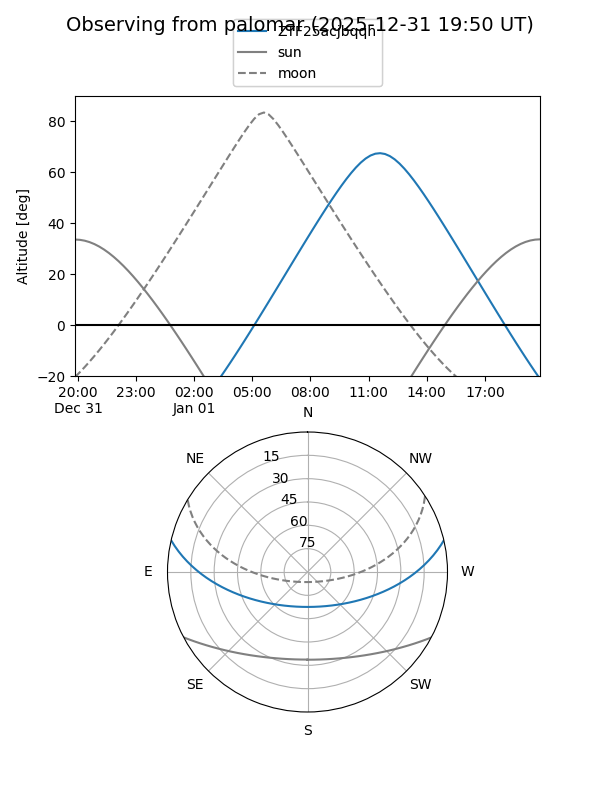

ZTF25acjbqqh
Target ZTF25acjbqqh at 2025-12-24 16:17
Aliases and brokers:
FINK: fink-portal.org/ZTF25acjbqqh
Lasair: lasair-ztf.lsst.ac.uk/objects/ZTF25acjbqqh
ALeRCE: alerce.online/object/ZTF25acjbqqh
alt names
ZTF25acjbqqh (ztf,fink_ztf)
Coordinates:
equatorial (ra, dec) = 157.4490,+11.03094
equatorial (HMS+DMS) = 10:29:47.77,+11:01:51.40
galactic (l, b) = (231.8106,+53.05433)
Flags:
Photometry:
last ztfr=20.25
1 ztfr detections
Lightcurve

Visibility


Additional plots